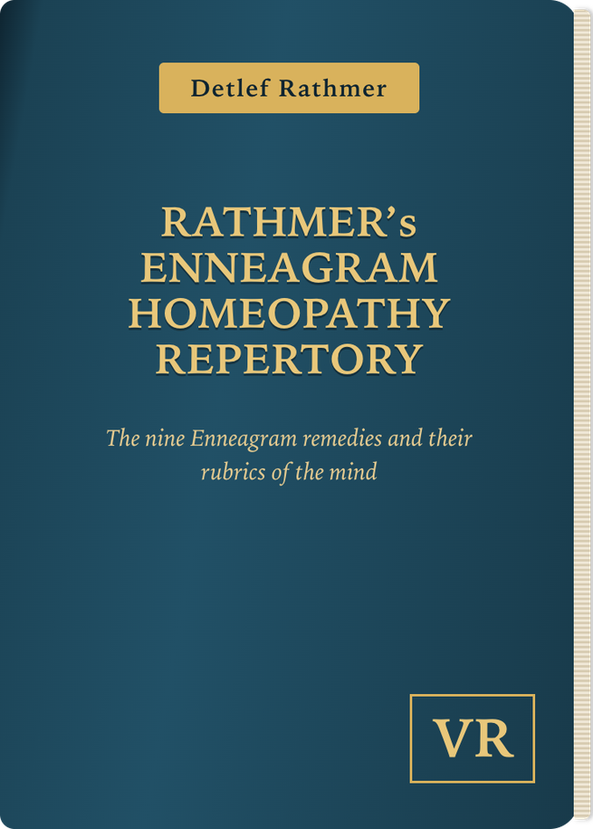

10,016 rubrics with the nine Enneagram remedies Platina, Hyoscyamus, Tarentula, Ignatia, Stramonium, Opium, Belladonna, Veratrum and Cannabis indica. 2,806 of them with meaning, definition or comment, more than 700 with extensive commentary. Plus type pages, cross-references and a case function for repertorizing. Available in German and English.
Introductory price € 79.50 for the first months, then € 99.50. One-time payment, no subscription. Access without an expiry date, availability guaranteed for at least 5 years.
The nine Enneagram remedies
10,016 rubrics in which at least one of the nine Enneagram remedies appears, with the complete rubric structure. The remedy count in the lists counts only these nine.
Definitions and commentary
2,806 rubrics come with meaning, definition or comment right there, more than 700 of them with extensive commentary. It becomes clear what a rubric really means before it is chosen.
Types and remedies
The nine Enneagram types with three subtypes each, switchable by type or by remedy, plus remedy pictures for Platina, Hyoscyamus, Tarentula, Ignatia, Stramonium, Opium, Belladonna, Veratrum and Cannabis indica.
Cross-references at a tap
“See under” and “Similar rubrics” from the book are clickable. Never overlook a fitting rubric again.
Create a case and repertorize
Choose rubrics and the remedies appear by frequency. Save cases, add name and notes, print as PDF.
In German and English
All rubrics, comments and type pages are available in both languages, switchable with a tap.
Runs on every device
In the browser on Windows, Mac, iPhone, iPad and Android, without installation. Light or dark, and placed on the home screen it opens like an app.
Weight rubrics, must-have rubric
Each rubric counts once, twice or three times. Mark a rubric as must-have and only remedies that appear in it stay in the result.
Remedies in the rubrics
For each remedy, tiles show the topic areas where it appears and where its rare rubrics are. One tap narrows the rubric list to them.
Short profile with one tap
Tap a remedy in the result to see its short profile without leaving the case.
Saved rubrics and sets
Collect frequently used rubrics in a list or save them as your own set, and add them to a case with one tap.
Prescription journal and photos
Note prescriptions with dates and attach photos to each case. Everything stays on your device.
Back up your cases
Save all cases to a file and import them on another device.
Help and update notice
A short guide is built in. When a new version is available, the app tells you.
Try it free
To try it out there is the free trial of the large repertory with the same interface: five large rubrics (Anxiety, Sadness, Anger, Irritability and Weeping) and ten polychrests, with all functions. No sign-up, no cost.
Tip: In Safari tap “Share” → “Add to Home Screen”, and it opens like an app.
I compiled the nine enneagram remedies with their mental rubrics by hand some years ago. They were published as a printed book (German-language edition) and have been maintained since. The 2026 app adds case function, weighting and PDF printing.
The repertory is a reference work designed for homeopaths. It does not replace diagnosis or medical treatment.